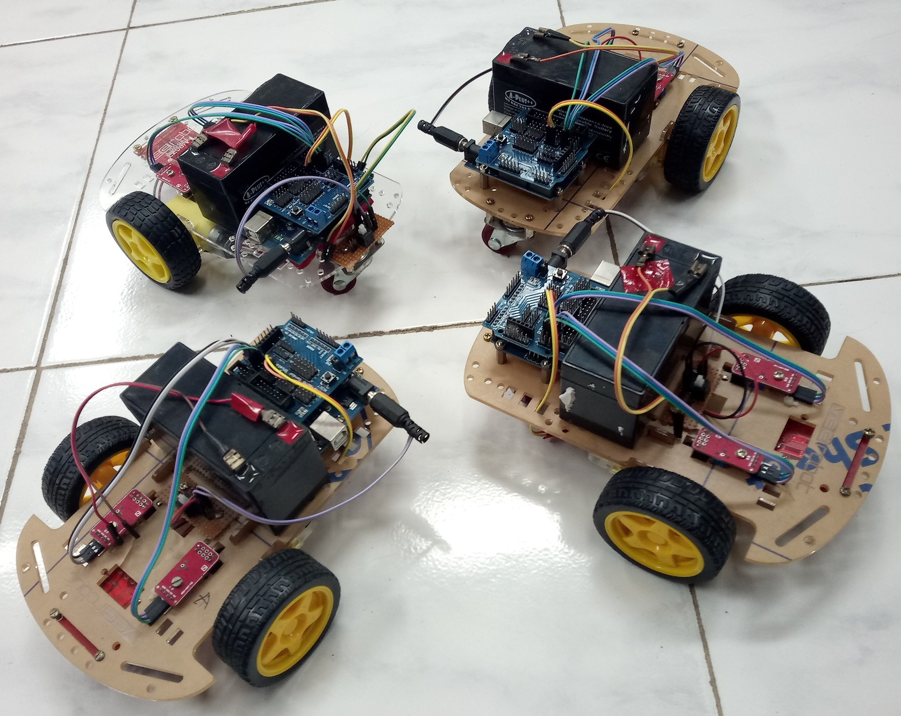
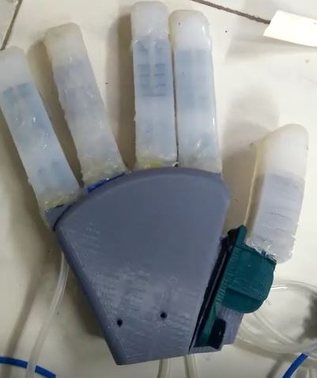
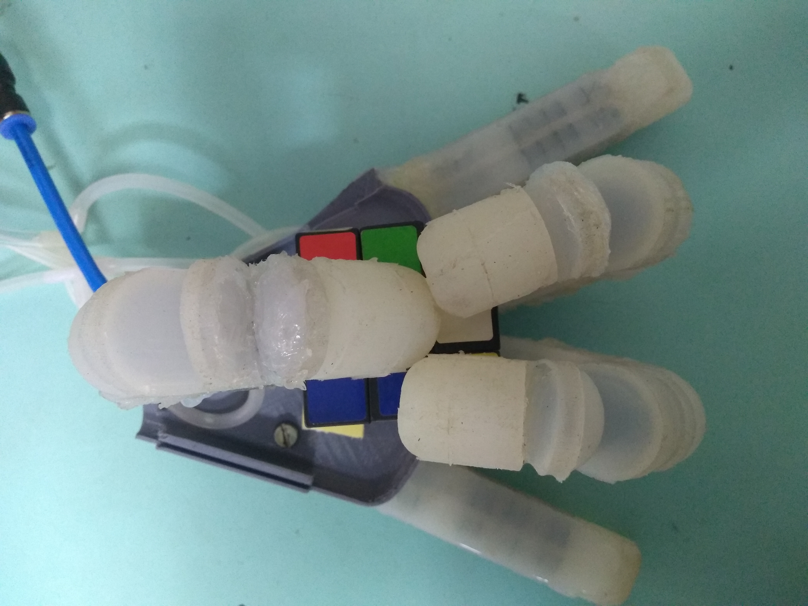

Robotic TestbedsRendezvous of multi-agent systems The experiments to verify the hardware efficient algorithms have been carried out on indigneously crafted miniature mobile robots as shown in the adjacent figure. The testbed consists of six such identical robots, each equipped with an 8-bit, 20 MHz ATmega328P microcontroller mounted on an Arduino UNO board. The position information on these robots is gathered via two MOC7811 sensors on each of the robot's wheels. These robots are also equipped with ultrasonic sensors for dynamic obstacle detection. Finally, all communication needs are fulfilled by Xbee-PRO RF modules that are low cost and low power wireless sensor networks operating at 2.4 GHz with a transmission range of upto 90 m. A typical implementation involves gathering location information from all the robots, computing the optimal location for rendezvous using one of the hardware efficient algorithms and then transmitting the meeting location back to all the robots. While this is handled by the main program on microcontroller, the interrupts obtain updates on the location of current robot and detect any obstacles in the path(static, dynamic or fellow robots). This is illustrated in the following video. Rendezvous in the presence of an intelligent vision-guided adversarySince the adversary is typically on a different team, it acquires the necessary information about other agents via an on-board camera. In order to handle image processing, the adversary is equipped with a Raspberry Pi 3 B+ board. The adversary exploits various markers present on other agents (red or green boxes) to determine the heading direction and pursues them until capture. This game theoretic framework demands a few new features in the robotic test bed as illustrated by the following video. Utilization of MQTT protocol to realize complete information exchangeWhile the previous two experiments merely involved computing the meeting location (by one of the robots) and transmitting it to the rest; a more advanced game that we recently designed required constant exchange of location information among the players. The subsequent actions of individual players were determined in a distributed manner by each robot. To this end, we utilized MQTT protocol to achieve communication among the robots. The robots were all equipped with Raspberry Pi devices and they take turns in being transmitters while the remaining act as receivers. We designed a protcol that achieves complete information exchange among four players with a maximum latency of 500 ms, a value that does not affect the outcome of the game. Rendezvous of heterogeneous robots amidst obstacles with limited communicationIn this experimental setup, we consider the problem of rendezvous between a pair of heterogeneous robots. We assume communication is limited to infrared beacons on each robot. No a priori knowledge of the positions of the robots is required. We present an algorithm for rendezvous of the robots in an environment that may contain one or more obstacles. We also address the issue of ambience when dealing with infrared beacons. Experiments with a mobile robot and a bipedal robot are presented to validate the efficacy of the proposed algorithm. Design of a Silicone Rubber-based Anthropomorphic Soft Robot HandIn this work, we discuss the design of a five-fingered silicone rubber-based soft robot hand, shown below. This hand has been fabricated in-house and is comprised of four identical fingers and a thumb. The hand is pneumatically driven and each finger is a hybrid combination of rigid and continuum links. In particular, a rigid link corresponds to a bone that is 3D printed (with polylactic acid) while silicone rubber fills the space between the bones. The thumb, however, has only one of each kind of links. We study two different kinds of grasps: enveloping and pinch. An illustration of the hand holding a Rubik's cube in an enveloping grasp configuration is shown in the figure below.   Design and Fabrication of bipedal robots-Heterogenity in rendezvousThe following video marks the humble beginnings of designing and fabricating humanoid robots as part of my Masters Thesis. The first robot (Prototype-I) is built with six joints, two each at the waist, knees and ankles and features dynamic stability. Prototype II is built with just four motors in a different configuration to ensure maximum stability when stationary. The robot mimics the motion of a toddler. |